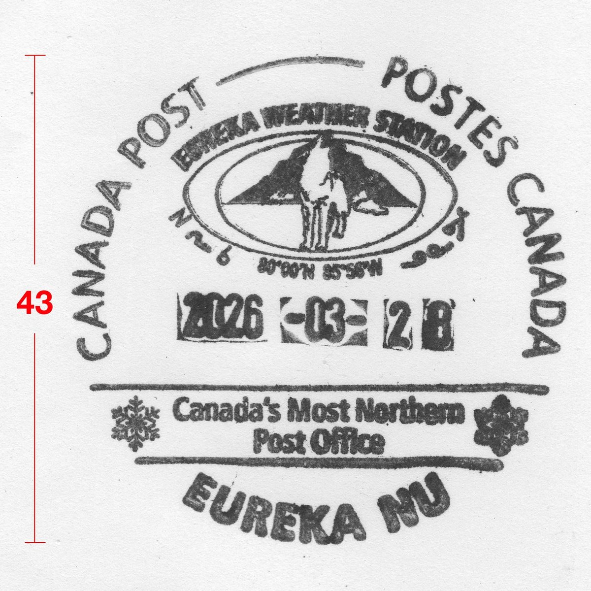

Eureka Station Fund pictorial cancel
EUREKA WEATHER STATION – Canada's Most Northern Post Office
- Status
- Active
- Run dates
- 2018-01-01 to 2029-12-31
- Design
- "EUREKA WEATHER STATION / Canada's Most Northern Post Office"; howling wolf, snowflakes
- Ink colour
- Black
- Designer
- Unknown
- Post office
- Eureka Station Fund
General Delivery
Eureka, NU
X0A 0G0 - Subjects
- arctic, animal, canine, wolf
- Notes
- Requests to this post office may take one year to be returned. This post office / weather station also offers 2 souvenir marks that are not postmarks: (1) 'EUREKA WEATHER STATION'; howling wolf. (2) 'GARDEN SPOT OF THE ARCTIC / EUREKA NU / 80°00'N 85°56'W'; map, Arctic Circle, coordinates.
Collect it by mail. Send your stamped covers, with a stamped return envelope, to the post office address above (check the notes first). How to collect pictorial cancels by mail · en français
 Cambridge Bay POMAUD
Cambridge Bay POMAUD